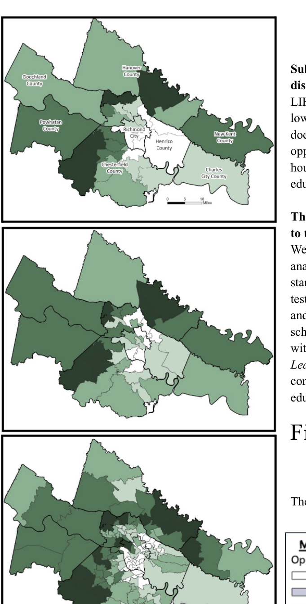
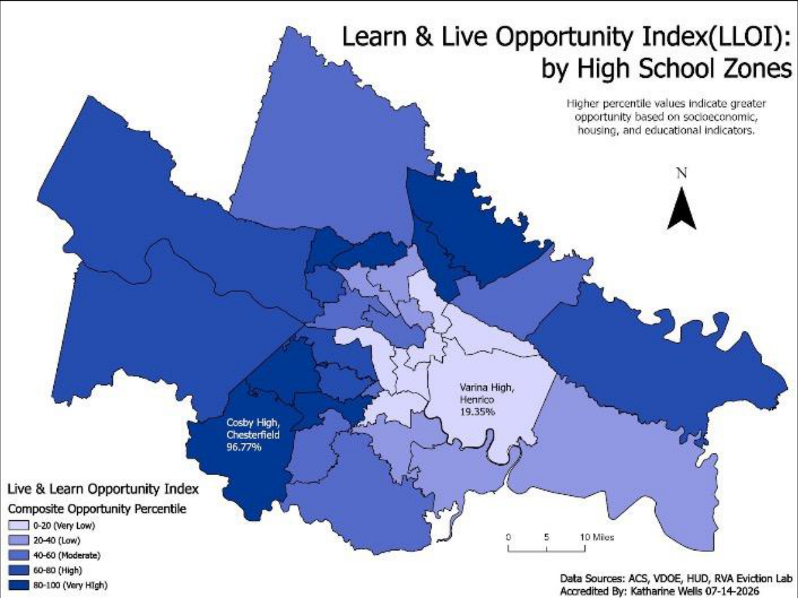
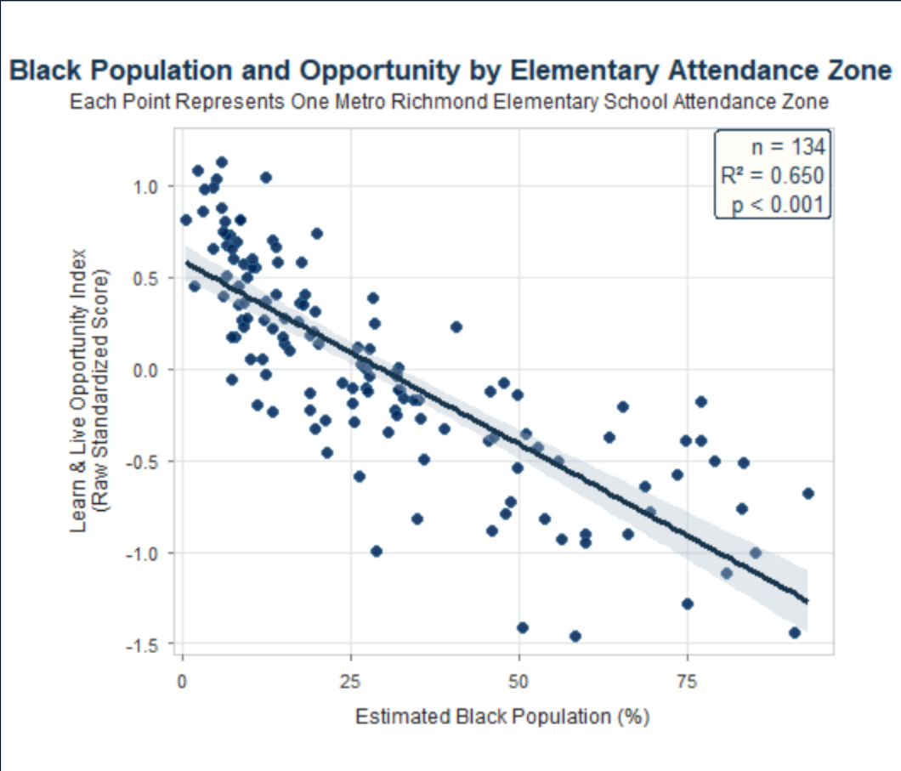
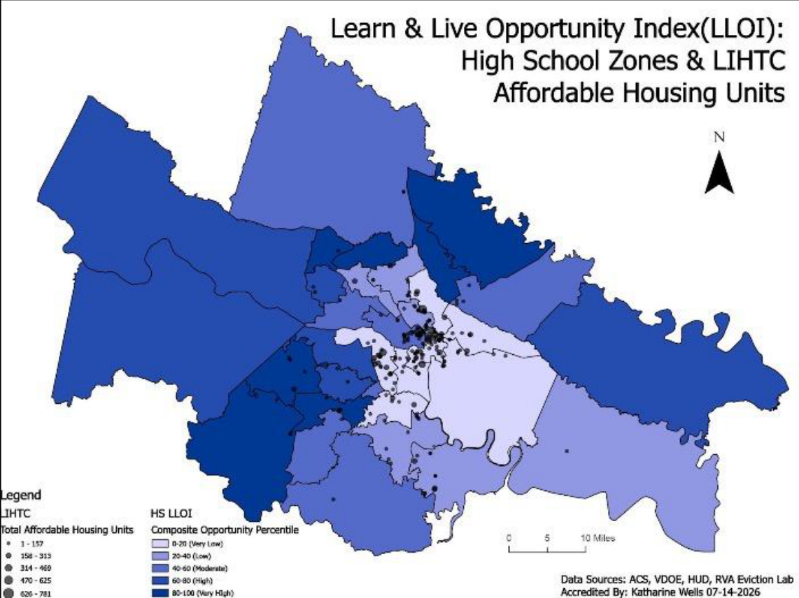

The research question
Regional averages can conceal consequential differences across neighborhoods and school assignment zones. The Live and Learn Opportunity Index (LLOI) examines where different conditions associated with opportunity overlap and how they vary within the same jurisdiction.
Our broader project responds to a practical policy problem: housing, education, and neighborhood conditions are often analyzed separately, even though families experience them together.
Index composition · 13 indicators
- 5 Demographic & socioeconomic
- 4 Educational
- 4 Housing
Building the index
I developed reproducible R and ArcGIS Pro workflows that connect data from the American Community Survey, Virginia Department of Education, and housing-related sources to school attendance boundaries. Each indicator is standardized, direction-adjusted, and brought into a shared framework.
Integrate demographic, educational, and housing data from multiple public sources.
Use geographic overlays and areal-weighted interpolation to align data with attendance zones.
Standardize the 13 indicators and examine the resulting patterns across school levels.
What goes into the index?
| Dimension | Examples of measures | Indicators |
|---|---|---|
| Demographic & socioeconomic | Income, poverty, SNAP participation, uninsurance, language | 5 |
| Educational | School performance and education-related conditions | 4 |
| Housing | Rents, evictions, affordability, housing choice vouchers | 4 |
My contribution
My role includes constructing the index, writing R code, integrating spatial data in ArcGIS Pro, designing policy-facing figures, and communicating the methodology in a white paper. The work is developed with a broader academic and housing-policy research team, including collaborators connected to VCU and regional housing organizations.
The index is an analytical tool, not a causal explanation of why individual families or neighborhoods experience specific outcomes. A lower score should not be interpreted as a recommendation for relocation; it can help raise more specific questions about where to investigate and invest.
A school-zone lens makes within-jurisdiction differences visible—and gives local decision-makers a more precise starting point for discussing opportunity.
Research status
2026 undergraduate research and policy-writing project. The index methodology, maps, and policy interpretation continue to be refined for presentations and public-facing research outputs. The project received second place for Best Geographical Analysis at VAMLIS GeoCon 2026.
Original files & maps
The documents and figures below are taken from the original research files. Their authorship and status are preserved; these are not AI-created research graphics.
- Symposium Poster-LLResearch Summer 2026(2).pptxResearch poster · original PowerPoint
Poster includes the original school-attendance-zone maps and research figures.
Author / team: Katharine Wells, Hays Stritikus, Savannah Hollen, Tom Shields, and Kyle Redican
Original maps should be extracted from the authored poster or the GIS exports, not redrawn from a written description.
No AI-generated images, invented GIS outputs, fabricated figures, or reconstructed research maps are used on this page.




Selected maps and wording are taken from the working white paper, Mapping Opportunity: Housing and Educational Inequality Across School Attendance Zones in Metropolitan Richmond. The manuscript remains a draft; the full draft is not published here.